含稅價格／截至 2026/11/16

濃郁滑順的鱈魚白子，搭配柚子醋享用，清爽開胃。建議與紅葉蘿蔔泥一同品嚐！歡迎搭配您喜愛的酒品一同享受。

將鱈魚白子放在昆布上烤至香氣四溢。吸收昆布鮮味的白子，建議沾著高湯醬油品嚐！


將油脂豐富的鰤魚皮面炙燒至香氣四溢。建議搭配芥末一同享用！
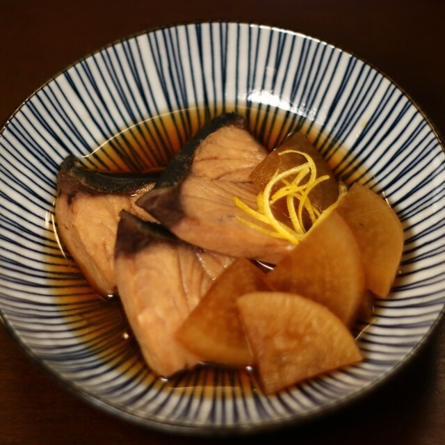
將鰤魚與蘿蔔細火慢燉至充分入味。溫暖人心的一道料理！
以刺身方式呈現河豚獨特的彈牙口感與細緻鮮味。


酥炸豆腐上淋上滿滿的湯葉與菇類勾芡。請趁熱享用！

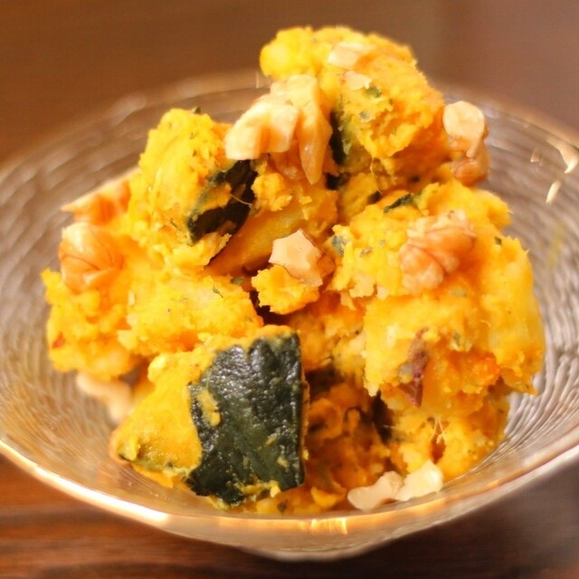
這道自家製馬鈴薯沙拉選用當季新鮮蔬菜！我們特別以奶油起司取代美乃滋拌製，帶來獨特風味！

嚴選當日推薦的五種海鮮，精緻拼盤呈現刺身風味。

嚴選當日推薦的三種海鮮，以刺身方式呈現。

新鮮生蝦與酪梨製成韓式拌生。拌入蛋黃後充分混合享用！
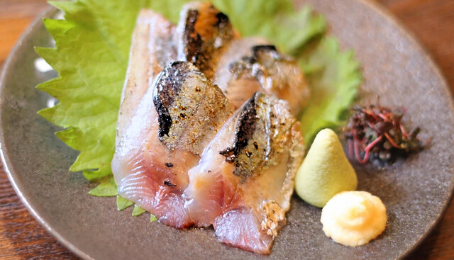
我們選用當季肥美的秋刀魚，僅將魚皮炙烤至香氣四溢，製作成生魚片。搭配藥味一起享用，清爽開胃！

秋季南下的返游鰹魚，脂香特別豐富。我們將其表面炙烤，搭配藥味一同享用，風味清新！

新鮮竹筴魚搭配番茄與洋蔥，製作成義式生魚片。無論作為小菜或下酒菜都很適合！

精選三款推薦前菜，少量拼盤呈現。作為開胃第一道很適合！

吸滿高湯，鬆軟捲製而成。建議搭配蘿蔔泥一同享用！

牛筋細火慢燉至入口即化。非常適合搭配酒品的一道料理！
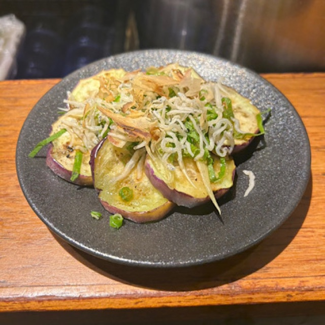
茄子上鋪滿吻仔魚與各式佐料。清爽開胃，讓人一口接一口！

酒盜的濃郁鮮味與奶油乳酪的柔滑完美結合。推薦搭配喜愛的酒品！

雞皮以柚子醋調味，清爽不膩。非常適合搭配酒品！

將炸過的小竹莢魚浸泡在甘醋中，清爽開胃的南蠻漬料理。

口感脆彈的鯊魚軟骨，拌入梅肉，是一道特別的小菜。很適合搭配酒品！

滑嫩的湯葉以刺身方式呈現。請細細品味大豆的自然甘甜！
烤過後釋放甜味的無花果，搭配味噌製作成田樂風味。

三款秋季菇類以奶油香煎至金黃。
奶油濃郁與時令菇香完美融合的一道料理。

將魟魚鰭炙烤至香氣四溢。越嚼越能感受鮮味。建議沾點美乃滋享用！

將海螺連殼烤製，保留海洋的鮮香。請盡情享受海味！

帶頭大蝦連殼鹽烤至香氣四溢。連蝦頭的鮮美都能品嚐！※照片為2尾份量。
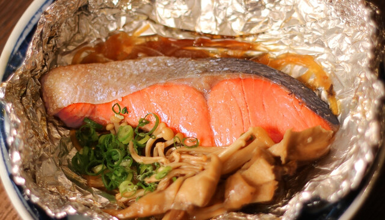
將秋鮭與當季菇類包入鋁箔中，鎖住鮮味蒸烤。
以清爽柚子醋調味！

鴨肉表面炙燒至香氣四溢，內裡保持濕潤。建議搭配佐料一同享用！

將烤得濕潤的雞胸肉，搭配梅肉與紫蘇葉。清爽開胃！照片為2人份。

經典串燒，雞肉與蔥段交錯串起，以甘甜醬汁烤至香氣四溢！照片為2人份。

帶皮馬鈴薯炸至鬆軟綿密。適合大家一起分享的小點！

將明太子、大葉與奶油乳酪包裹後酥炸。請享受融化的起司與明太子的鮮味！

將當季熟成無花果與奶油起司包入春捲中！
酥脆外皮下，無花果與起司融化交織，極致美味。

外皮烤得酥香的烤飯糰。推薦作為餐點的結尾！
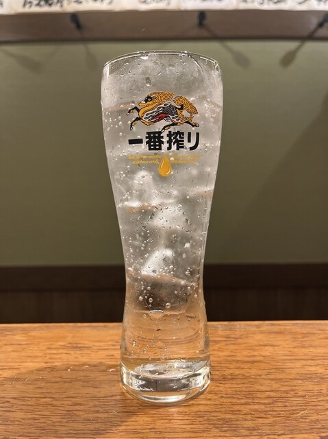
Sparkling water

Oolong tea


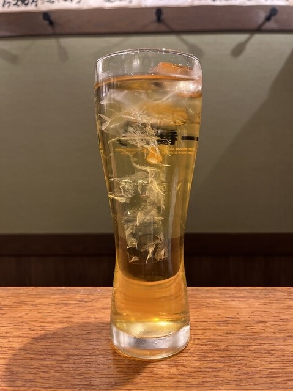
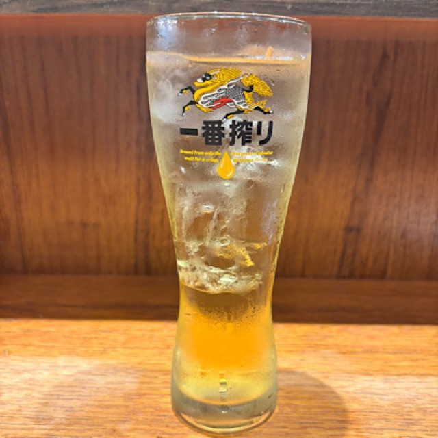
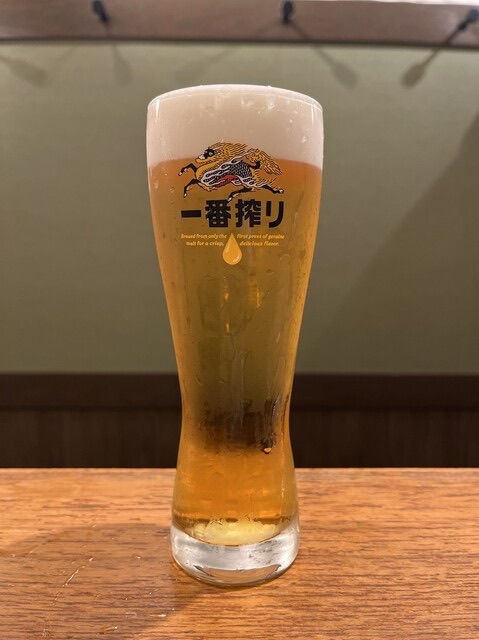
Draft beer
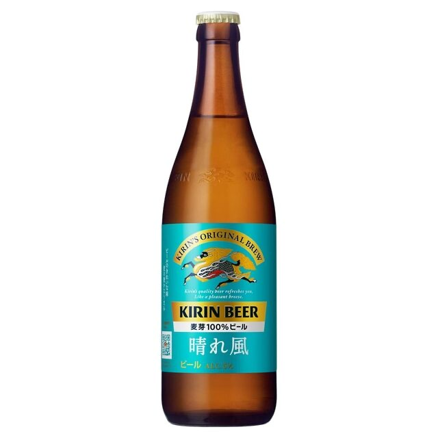


Whisky and Soda
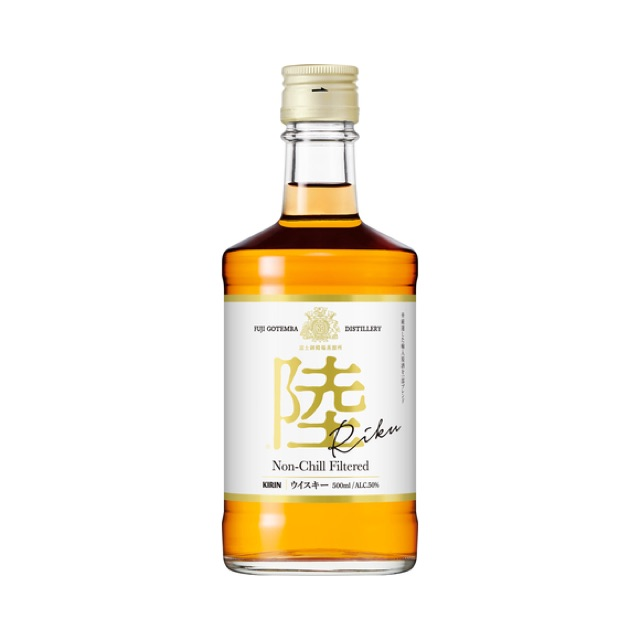

Lemon sour
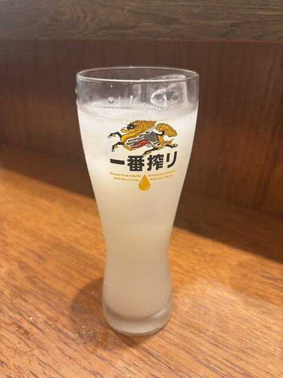


Shochu Barley on the rock
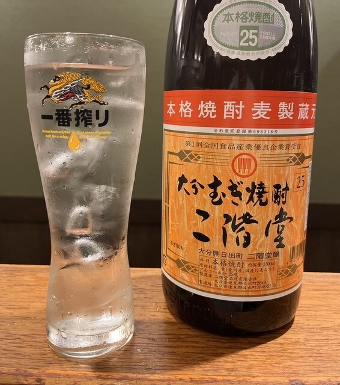
Shochu Barley and water
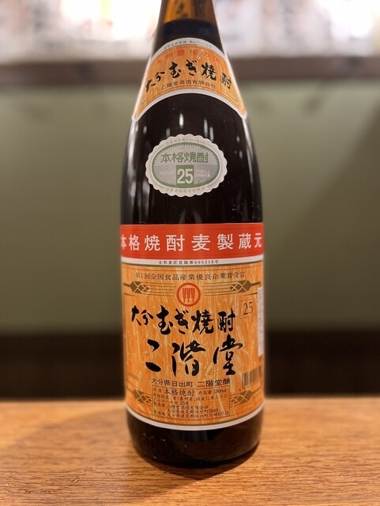
Shochu Barley and hot water

Shochu Barley and soda
Shochu with Oolong Tea


Shochu Sweet potato on the rock

Shochu Sweet potato and water
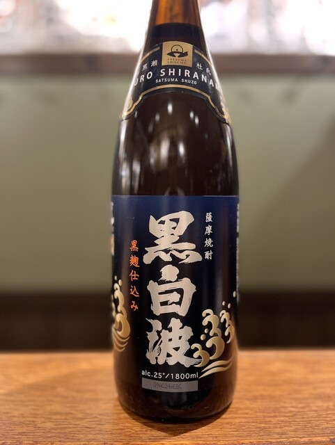
Shochu Sweet potato and hot water

Shochu Sweet potato and soda


雖然會稍微淡一點，也可以選擇水兌或蘇打兌。歡迎洽詢我們的服務人員。

雖然會稍微淡一點，也可以選擇水兌或蘇打兌。歡迎洽詢我們的服務人員。